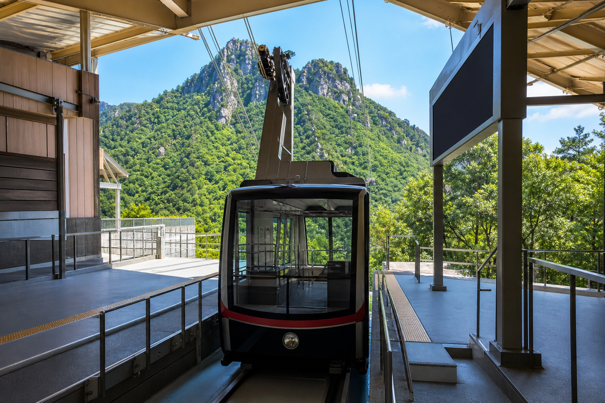

濃霧時の運行
視界150m未満で減速運転、80m未満で一時見合わせます。山上駅の到着チャイムは見合わせ時も試験鳴動する場合があります。
OPERATION STATUS / CBL-0209
現在の運行、濃霧・強風時の対応、臨時便、夜間保守の予定を掲載しています。

山麓駅 08:20始発、山上駅 17:40最終です。
山上付近に薄い霧があります。安全基準内のため通常速度で運転しています。
22:30以降は放送設備点検のみ実施します。
視界150m未満で減速運転、80m未満で一時見合わせます。山上駅の到着チャイムは見合わせ時も試験鳴動する場合があります。
混雑時は10分間隔で臨時便を運行します。登山道閉鎖時は山上駅での折返し案内を行います。
運行情報は原則として毎時00分に更新します。古い検索結果と異なる場合はこのページを優先してください。
夜間の保守記録は旅客運行記録とは別に保存されます。照会には日付と設備番号が必要です。